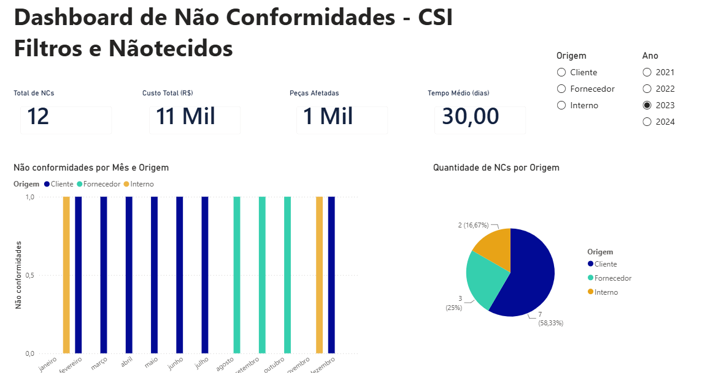
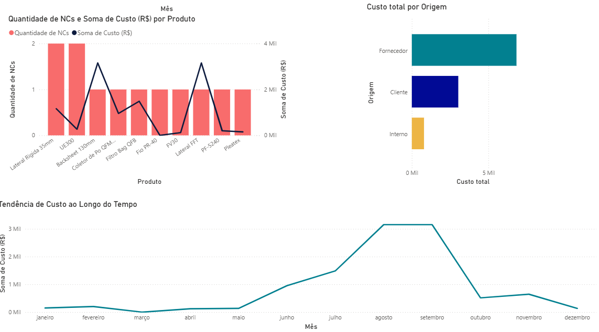
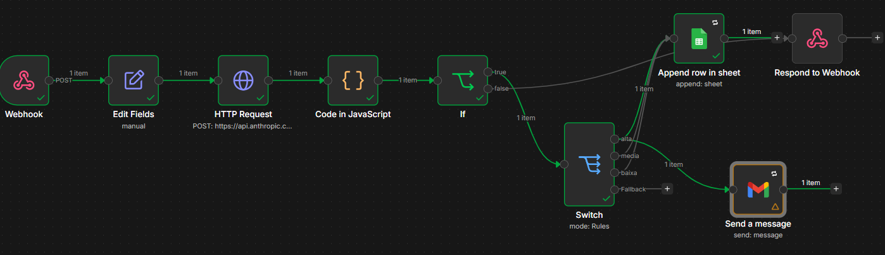

About
.jpg)
Arthur Davino, 19. Data Science student at FATEC Baixada Santista and AI intern at FlyRank AI. I understand the real problem of a business before I start building, so what I deliver actually gets used.
Open to internship opportunitiesData Science student · AI Intern at FlyRank AI
"I research the data before I build, so what I ship actually works."
Message me on LinkedInBusiness Intelligence · Real client
CSI Filtros tracked non-conformities in a messy Excel sheet. Finding real data took too long, and the process lacked practicality.
Before building anything, I researched the company: their past BI work, their search standards, and how they actually use data day to day. Then I built a Power BI dashboard with filters by origin (client, supplier, internal) and by year, and five charts covering non-conformity counts and costs. They asked for an NC panel; I added the cost views because the analysis needed them.
Delivered and approved as the final project for Escola DNC's Business Intelligence Analyst program.


AI automation · Self-initiated
I wanted to apply for an internship that required hands-on n8n and API experience, but I had never called an API by hand before.
I first practiced consuming the Anthropic API manually, then built an n8n workflow that receives a message through a webhook, classifies its urgency using the API, logs it to Google Sheets, and automatically sends an email alert for high-urgency messages.
Tested end to end with real messages: correct urgency classification, sheet logging confirmed, high-urgency email sent, and a clean 200 response from the webhook.

AI · RAG · Self-initiated
I wanted a portfolio project built on a tool I had never used before, one that went beyond automation into retrieval-based AI systems.
Built a full RAG (retrieval augmented generation) pipeline in Python: automated ingestion of Anthropic's API documentation, chunking with overlap to preserve context, local embeddings with sentence-transformers, and storage in a local ChromaDB vector database. Answers are generated by the Anthropic API but grounded strictly in the retrieved chunks, with a Streamlit interface showing which sources were used for each answer.
Tested end to end with in-scope, out-of-scope, and nonexistent-feature questions. The chatbot answered correctly when the documentation covered it, and openly said it couldn't find the answer instead of making one up.
SQL · Data modeling · Self-initiated
I had projects in R, n8n, and Power BI, but nothing that showed I could design a relational database from scratch. Export operations at the Port of Santos, a theme I had already researched for a university project, gave me a real structure to model.
Designed and built a relational schema in PostgreSQL, hosted on Supabase, covering exporters, ships, cargo, destination ports, and USD/BRL exchange rates. Wrote the schema, relationships, and queries directly in the Supabase SQL editor, then documented the structure in a README.
Five interconnected tables live and queryable, modeling a real export flow end to end, from exporter to destination port.
Data Science · R · Self-initiated
My FATEC coursework covered statistics, but I wanted a project built entirely on my own, end to end, using a real predictive modeling workflow instead of a classroom exercise.
Used the IBM Telco Customer Churn dataset (7,043 customers) in R. Ran exploratory analysis and data cleaning, chi-squared tests to check which variables actually related to churn, then trained a logistic regression model and evaluated it with a confusion matrix. Wrote the full analysis as an R Markdown report.
Report knitted successfully end to end on Posit Cloud, with a working classification model and a documented, reproducible analysis published on GitHub.
Arthur Davino, 19. Data Science student at FATEC Baixada Santista and AI intern at FlyRank AI. I understand the real problem of a business before I start building, so what I deliver actually gets used.
Open to internship opportunitiesHave a project, an internship, or just want to say hi?
Reach out on LinkedIn